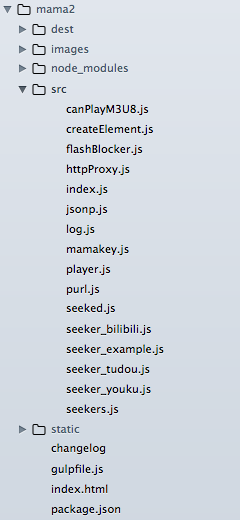

妈妈计划用于解决在看视频网站时macbook发热严重的问题。使用video来替换原来的flash播放器。
目前网站支持列表:
众人拾柴火焰高 计划
加入妈妈计划开发，视频网站的解析朱一一个人缺失是搞不过了。每个视频网站的解析规则可能会不定时的改变。朱一每天也就看看优酷或者bilibili，不大可能照顾到所有网站（毕竟是个业余项目QAQ）。所以如果你觉得妈妈计划不错。想帮助妈妈计划做的更好，恳请您加入众人拾柴火焰高计划。
搭建本地环境
首先你能确定你能访问到 Github
MAMA2需要本地环境:
node
npm
gulp
MAMA2的Github仓库:
https://github.com/zythum/mama2
clone到本地后执行:
$ npm install
然后执行:
$ npm start 或者 $ gulp
本地启动的httpServer默认为 http://localhost:8000
那么本地环境就搭建好了。
⚠注意: 在开发工程中，确保你的本地环境时开启状态
开发使用 收藏夹脚本
拖拽下面图标到收藏夹
开发说明
现在的目录结构是这样的 
很凌乱有木有。QAQ
其实一般只需要编写用于获取视频地址的逻辑，我这边称为seeker。所以只需要注意 seeker- 打头的文件，和 seekers 的文件就可以了
举个例子🌰
我们要为名为 example 的视频网站写seeker脚本
在src目录下创建 seeker_example.js 文件。
我已经创建好了。文件是这样的
注释很丰富的样子。所以大家看注释吧。嚯嚯嚯嚯
然后需要在 seekers.js 文件中加上一行
大功告成！用浏览器上的开发用收藏夹脚本测试下。
如果测试ok的话, 那么把代码pull request给朱一吧。
不方便pull request？
那么用email给朱一也是可以的
zythum02@gmail.com
MAMA2-妈妈再也不用担心我的macbook发热了计划2
联系原作者: zythum02@gmail.com